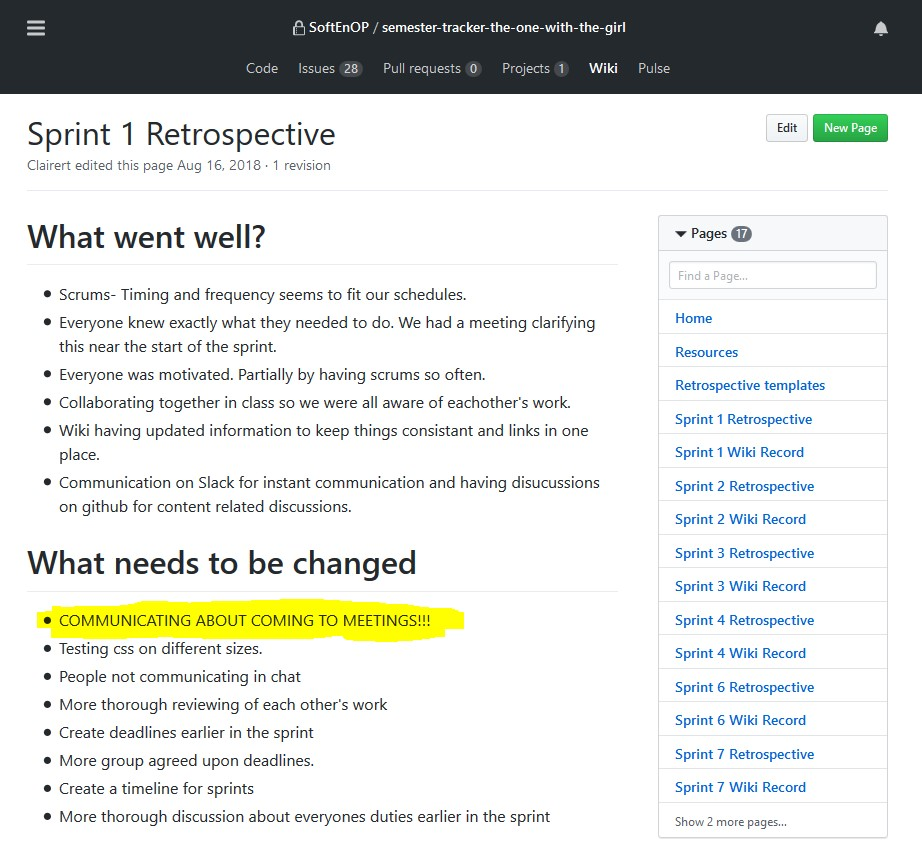
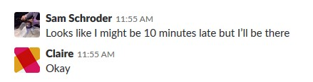
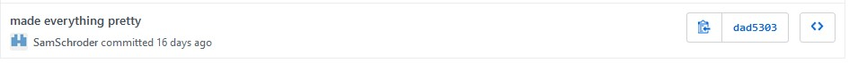
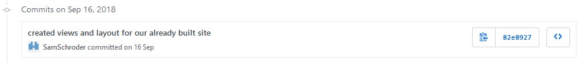
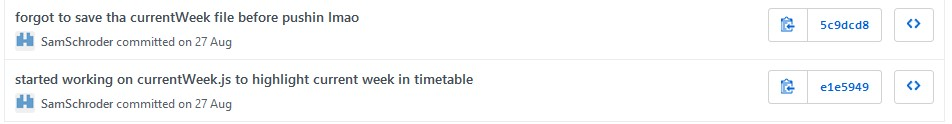
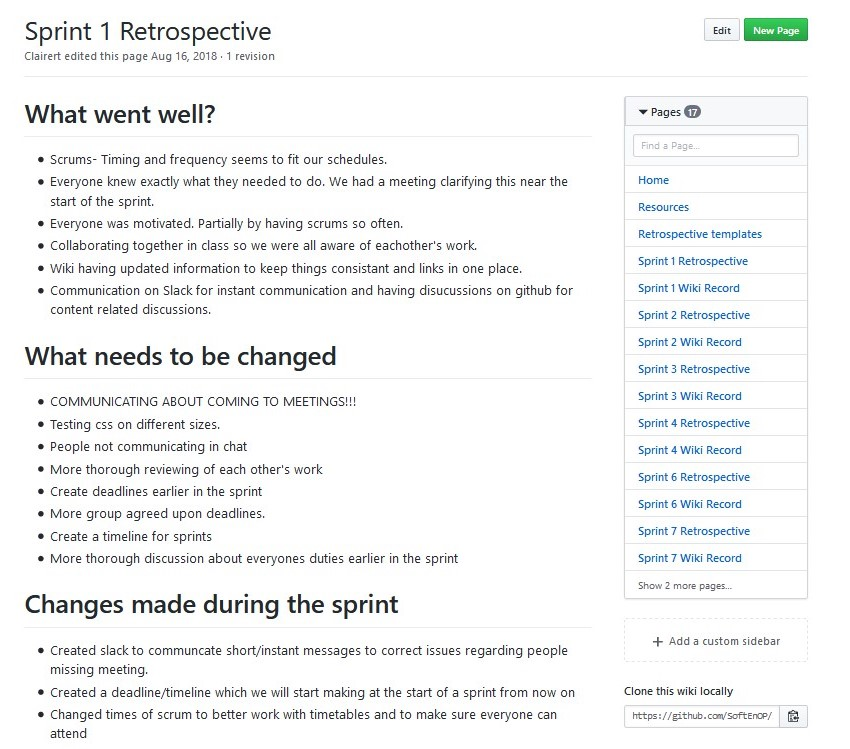
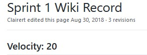
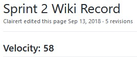
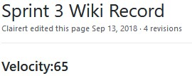
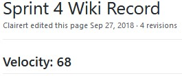

Professional Proficiency
Communication
Over the course of the semester our ability to communicate as a group improved a lot.
I believe this is one of the reasons we managed to deliver a relatively complete product.
I believe this because when we first started working on the project as a group, we would only really communicate when we met in class time for this paper and during other classes when we happened to share them.
This worked okay when we were in more of a planning faze for the project, but we realised once we had started to work on actually building the project and were attempting to do daily scrums that this was not going to be enough.
We decided to make a slack channel for our group so that we could communicate with each other while not face to face.
Although, we also decided as a group that this channel should really only be used for asking for the occasional bit of help but mainly for organizing face to face meetings as they are the most efficient way of communicating and getting things done.
Once we had this our daily scrums became more regular and we were able to organize meetings to work on and discuss the work we had to do outside of class time.
Although we had this channel and were organizing meetings outside of class. We were not all fully communicating. People would occasionally miss a meeting or be rather late without notice. This was discussed as something to work on during a sprint retrospective and we all made an effort to improve on our communication even more than we had by doing better at this.

Principle six of Agile states: "The most efficient and effective method of conveying information to and within a development team is face-to-face conversation". Our use of face-to-face meetings shows that we followed this principle very well. This helped us to work better as a group because it definitely improved our one-on-one communication between team members, as opposed to if we had tried to talk things out via the slack channel or similar means.
Time Management
When it comes to time management, I have never been particularly good at it. I usually get the work I have to do done but am particularly bad at leaving it until the very last minute. This semester has been a big semester over all for me with all my papers and having lots of work to do from week to week, having checkpoint work to complete for Programming and database papers while also working to support myself financially. Being this busy has forced me to work better at setting myself a schedule of when to complete all of my assigned classwork.
Each of our sprints were two weeks in length, starting and ending on Thursdays. The plan I set for myself for working on my assigned tickets for each sprint was to other than working in class time, use my weekends. Usually working on Saturday mornings meant I was usually quite tired for the rest of the day and not always able to use my brain particularly well. This led me to decide that I would get most of my work done on my tickets on Sundays, having the entire day to work on things. I also had no classes on Mondays so even though I had work on Monday nights, this gave me plenty of time to get back to things on Monday if there was more for me to do or if I for some reason could not get much done on Sunday. I chose this time of week because it meant I could come back to class on Tuesday to show my team what I had achieved, still having what I had done fresh in my mind. This helped to talk people through code I had written, show specific parts I thought might be important and ask for assistance on things I was struggling with while still remembering the exact issue.
The following screen captures are my major commits from our final sprint.
It started on Thursday 25th of October and ended on Thursday 8th of November.
This commit is from Sunday 3rd of November which is when I made most of the major changes to our css.
Whereas this commit is from Tuesday 5th of November when after I got input from the rest of the team and made the final alterations to the css of our project.
More work being done on Sunday 16th of September during a sprint that started on the 13th and ended on the 27th.
More work being done again on Monday the 27th of August.

I include a couple of examples in order to show that this plan of getting project work done in my own time on Sundays and Mondays was something I did throughout the semester.
Using Agile and more specifically the sprint methodology helped me with time management immensely this semester and I believe I would not have completed anywhere near as much work as I have on this project in particular without it.
You can see in the previous examples that I did most work in the final weekend before finishing sprints.
I mentioned earlier my tendency to leave things to the last minute and this is an example of that.
Having to complete work on a bi-weekly basis, along with the requirement of updating my team almost daily due to scrums, forced me to get things done in chunks during each sprint rather than trying to complete a much larger amount of work in the last couple of weeks before our project was due.
It has made me look at how I manage time to complete work over all in my life and not just in this specific project. Having to deliver work regularly and trying to complete it with little time left has shown me how hard it gets when things come down to the wire.
Especially if you have under-estimated how hard the work will be to complete or over-estimated your ability to complete it.
Sprints helped me with time management and getting work done, but this was not only good for me as an individual but it helped us as a team.
It helped us to follow the third principle of Agile that states "Deliver working software frequently, from a couple of weeks to a couple of months, with a preference to the shorter timescale".
We followed this very literally by using two week long sprints that made us deliver work to the mentioned preferable shorter timescale.
This also helped us to follow the first principle of Agile; "Our highest priority is to satisfy the customer through early and continuous delivery of valuable software".
At the end of every sprint we would show the client what we had completed during that sprint, meaning we were continuously delivering software to the client.
Agile Principles
During the course of this project our team worked to follow the principle of Agile in order to produce the best product we could. I have already mentioned how we followed the sixth principle by meeting face-to-face rather than communicate via messages to improve our communication. I also told of how we followed the third and first principle, by using two week sprints to continuously deliver software to the customer. These were not the only Agile principles we did well to follow.
Principle Twelve
Principle twelve of Agile states: "At regular intervals, the team reflects on how to become more effective, then tunes and adjusts it behaviours accordingly". At the end of each of our sprints we would sit down as a group and do a retrospective of what we thought went well during the sprint, what we thought should be improved on and any notable changes made to how we were working during the sprint.
This was good for the group because it gave the group an opportunity to recognize what we were doing well. It also gave members of the group the chance to voice any issues they felt were affecting the quality of work the group was putting out.
Principle Eight
An idea we incorporated as part of our sprints was that of 'velocity'. We would assign tickets points based on how hard we felt they would be to complete. As a part of sprint retrospectives we would add up the points of each ticket completed during that sprint and that total was saved to show the 'sprint velocity'. The idea of this was to show the level of work that had been completed during that sprint.
 
Sprint one was our very first sprint so we were really just setting things up and the work we were doing was not particularly complex so all the tickets scored quite low, leaving us with a low velocity score.
Sprint seven was our final sprint so we worked extra hard to get more things complete, giving us a much higher score.
Through the rest of our group project we maintained a similar level of velocity even in week six when a couple of people were sick and struggled to complete as much work.
There is no sprint five as there was nothing to record for it.
This was a sprint we set up during our mid semester break where we all agreed the tickets on it were not particularly important and we felt there was no pressure to complete them.
We chose to use our mid semester break for rest and working on other major assignments that were due at a sooner time.
We decided to only work on those tickets for this sprint if we had the time and really wanted to get something done.
This shows that we did well following principle eight of Agile.
Principle eight states: “Agile processes promote sustainable development.
The sponsors, developers, and users should be able to maintain a constant pace indefinitely”.
As the developers we held a steady level of work done over the semester and even managed to complete even more work when it came down to the final sprint and we needed to get the last few things done.